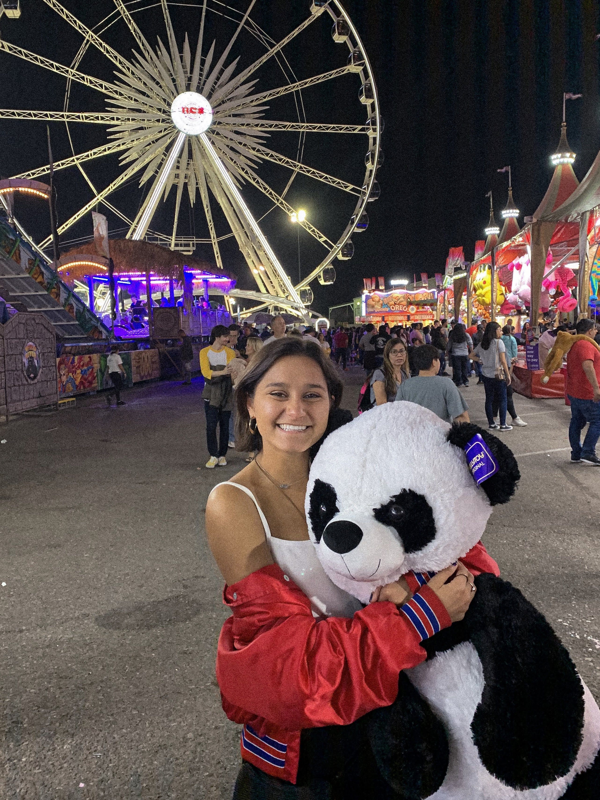

My Bio
Julianna is an undergraduate student at the University of Arizona Honors College with a declared major in Physiology and minor in Journalism. Her interests in cancer biology began when she saw her mother fight stage four gastric carcinoma. She then started her laboratory research experience at the Stowers Institute for Medical Research in Kansas City, Missouri, working underneath Dr. Alejandro Sanchez Alvarado and Dr. An Zeng. She worked on expressing and optimizing nanobodies to use as a specific-binding reagent for planarian pluripotent stem cells. She further developed her career working at University of Arizona Cancer Center underneath principal investigator, Curtis Thorne. During her free time, Julianna enjoys fashion photography, being a food junkie, and spending time with her cat, Delilah.